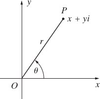
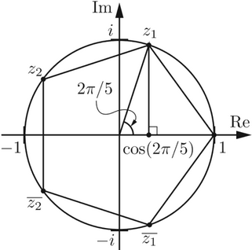

Complex Numbers
Over ther set of ordered pairs of reals numbers
ℂ = ℝ x ℝ
we define the following two operations
(a,b) + (c,d) := (a+c, b+d)
(a,b) ⋅ (c,d) := (ac − bd, ad + bc)
This set is a field: the pair (0,0) is the neuter element for addition, (1,0) is the neuter element for multiplication and the pair
(a/(a2 + b2), −b/(a2 + b2))
is the inverse of the pair (a,b). The set of pairs (a,0), a ∈ ℝ, is the set of reals numbers, because the mapping
f: ℝ ⟶ ℂ
r ⟼ (r, 0)
is injective and such that f(r + r') = f(r) + f(r') and f(r ⋅ r') = f(r) ⋅ f(r') ∀r,r' ∈ ℝ.
Definition 4.37 A complex number is an ordered pair of real numbers, i.e. an element of ℂ = ℝ x ℝ. With respect to the operations defined above ℂ is a field, containing the real field.
If we indicate the pair (0,1) with the symbol i, we can write
(a,b) = (a,0) + (0,b) = (a, 0) + (0,1)(b,0) = a + ib
i2 = (0,1)(0,1) = −1
The element i ∈ ℂ is known as imaginary unit. Using this notation we have
(a + ib) + (c + id) = (a + c) + i (b+d)
(a + ib) ⋅ (c + id) = (ac −bd) + i (ad+bc)
Give z = x + iy, we call complex conjugate of z and we denote it by z̄ the number
z̄ = x − iy
Given z, z1 and z2 the following identities hold
(z̄) = z
(z1 + 2) = z̄1 + z̄2
(z1z2) = z̄1z̄2
z = z̄ ⇐⇒ z ∈ ℝ
zz̄ = x2 + y2 is a real number ≥0; if z ≠ 0, zz̄ > 0
The real number zz̄ is known as norm of the complex number z and its square root √(zz̄) is = (x2 + y2)1/2 is knwon as module of z and indicated by |z|.
The following properties hold
|z1z2| = |z̄1| |z̄2|
|z1 + z2| = |z̄1| + |z̄2|
The last identity is known as Triangle Inequality. If we identify the complex number z = x +iy as the point of the plane P(x,y) the module |z| represents the lenght of the segment OP.
Geometrically, the right-hand part of the triangle inequality states that the sum of the lengths of any two sides of a triangle is greater than the length of the remaining side.
Trigonometric form
From the geometric representation of complex numbers
let θ be the angle subtended between the positive real axis and the line segment OP, and let r2 = x2 + y2, we have the following relations
x = r cos θ y = r sin θ
Thus we can represent the complex number x + iy in the following trigonometric form
x + iy = r(cos θ + i sin θ)
The angle θ is known as the argument of the complex number z, the number r corresponds to the module of z: r = |z| = (x2 + y2)1/2. The module, r, is unique, but the angle θ is not unique since there are many angles in standard position with P on their terminal side.
De Moivre’s formula
If z and z' have the following representation z = r(cosθ + i sinθ) and z' = r'(cosθ' + i sinθ') then as it can be easily verified
z ⋅ z' = rr'(cos (θ + θ') + i sin(θ + θ'))
the product of two complex numbers in trigonometric form is equal to a complex number having as argument the sum of the arguments and as module the product of moduli. The trigonometric form of a complex number is particularly useful to calculate the powers; for every integer n> 0, we have the following relation known as De Moivre Formula, valid for every integer n and every θ ∈ ℝ
zn = rn (cos nθ) + i sin nθ) (4.14)
it results also
[r(cos θ + i sin θ)]−1 = r−1 (cos (−θ) + i(−sin θ)
If n is a positive integer greater than 1, u and z two complex numbers, if
zn = u (4.15)
then z is called an nth root of u. Let
u = r(cos θ + i sin θ), z = ρ(cos φ + i sin φ)
since zn = u, we can deduce that r = ρn, i.e. ρ = r1/n, thus ρ is the unique real positive number such that the n-th power is r. Moreover from zn = u we can deduce as well that: cos nφ = cos θ and sin nφ = sin θ, then nφ = θ + 2kπ, i.e.
φ = (θ + 2kπ) / n
For an arbitrary integer k ∈ ℤ, we obtain the complex number
zk = r1/n [cos (θ + 2kπ)/ n + i sin (θ + 2kπ)/n]
For k = 0, 1, n−1 the zk are all distincts and represent the distinct n-th roots of u. For u = 0 there is a unique root which is zero.
For u = 1, we have 1 = cos(nθ) + i sin(nθ), and hence cos(nθ) = 1 and sin(nθ) = 0. The only way this can happen if nθ is an integer multiple of 2π, or equivalently θ = 2kπ/n for some integer k. So the n-th roots of unity are cos(2kπ/n) + i sin(2kπ/n), for k = 0,...,n−1. Let
ζn,1 = ζ = cos(2kπ/n) + i sin(2kπ/n), k = 0, ..., n − 1.
Then every n-th root of the unit is equal by De Moivre formula, to the k-th power of ζ, i.e.
ζn,k = ζk, k = 0, ..., n − 1.
It can be easily seen that indicated with z0 a root of zn = u all the other roots can be obtained multiplying z0 by the n-th roots of the unit, i.e.
(z0 * ζn)n = u
z0, z0ζ, z0ζ2,..., z0ζn − 1 (4.16)
In the complex plane, the n-th roots of unity correspond to the n vertices of a regular n - sided polygon inscribed inside the unit circle. We view the vertices of the pentagon as the five 5th roots of unity, that is, the five roots of z5 − 1 = 0.
Exercise 4.38. Calculate the module of the following complex numbers
1 + i + i2 + i3 + i4 + i5
(1 + i)2
Solutions.
(1 + i)2 = (1 + 2i −1) = 2i, thus the module is (0+22)1/2 = 2.
«Representation of numbers in arbitrary bases Index of Algebra Polynomial »